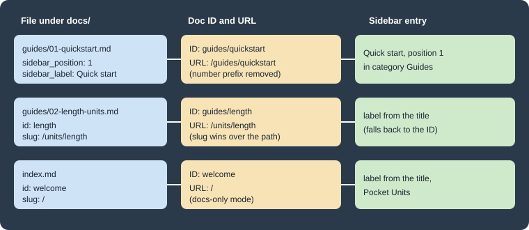

Docs and Front Matter
|
This content was generated with the assistance of AI and should be verified against the official documentation before being relied on in production. |
This page was written against Docusaurus 3.10.2 and checked on 2026-10-26. It covers the documentation plugin
(@docusaurus/plugin-content-docs) that powers the docs/ folder: how a Markdown file becomes a document with an ID
and a URL, every front matter field the plugin reads, how tags, draft and unlisted pages behave, and how to run more
than one docs section in the same site. The examples document the Pocket Units library (a tiny units-conversion
library with C# and Python implementations) and were built in a scratch site generated by
create-docusaurus@3.10.2 classic --typescript.
What the docs plugin does
The docs plugin scans a content directory (docs by default), builds one document per Markdown or MDX file, assigns
each document an ID and a permalink, builds the sidebars, and renders previous/next navigation and tag pages. In the
classic preset it is configured through the docs key of the preset options; used on its own it takes the same options
directly. The most useful options are:
| Option | Default | Meaning |
|---|---|---|
|
|
Content directory, relative to the site directory. |
|
|
URL prefix of the section. Use |
|
|
Route of the tags pages, appended to |
|
|
Glob patterns of the files to build. |
|
see the plugin reference |
Glob patterns of files to skip; refines |
|
|
Sidebars file. |
|
default parser |
Extracts number prefixes such as |
|
|
Path of the predefined tags file, relative to the content directory of each version. |
|
|
What happens when a document uses a tag not defined in the tags file: |
|
|
Show the author and date of the last Git commit; needs the full Git history in CI. |
|
|
Show breadcrumbs on document pages. |
Source: Docusaurus docs: docs plugin API
The remaining options (versions, edit links, theme component overrides, remark and rehype plugins) are covered in Versioning, Configuration and Plugins and presets.
Doc IDs, slugs and URLs
Every document has an ID, a slug and a permalink, and they are three different things.
-
The ID identifies the document inside the plugin. By default it is the file path relative to the docs folder, without the extension, so
guides/quickstart.mdhas the IDguides/quickstart. Hand-written sidebars,pagination_nextandpagination_prevrefer to documents by ID, so it must be unique. -
The
idfront matter field replaces only the last segment of the ID: a fileguides/hello.mdwithid: part1gets the IDguides/part1. -
The slug is the URL path of the document below
routeBasePath. By default it follows the file path. Theslugfront matter field overrides it. Both relative slugs (my-doc,./../my-doc) and absolute ones (/my/path/myDoc) are accepted, and/makes the document the root of the section. -
The permalink is
routeBasePathplus the slug, for example/docs/bonjour.
Files named index or README (case-insensitive), or named like their parent folder, are served at the folder URL
instead of at /folder/index. Renaming a file or changing its ID changes the default URL, so setting an explicit
slug on pages that others link to keeps permalinks stable. The docs also recommend mirroring the sidebar structure
in the file system and using slug to customize URLs, rather than the other way round.

The figure above shows three files of the Pocket Units example and the ID, URL and sidebar entry that the build produced for each one (values taken from the real build described below).
Docs-only mode
To serve the documentation at the site root, set routeBasePath: '/' in the docs options and, if the site has no blog,
blog: false. Give one document slug: / to make it the home page. The documentation warns that src/pages/index.tsx would then compete for the same route,
so the default home page file has to be deleted. The test site removed it.
presets: [
[
'classic',
{
docs: {
sidebarPath: './sidebars.ts',
routeBasePath: '/', // docs-only mode
},
blog: false,
theme: {customCss: './src/css/custom.css'},
},
],
],Front matter reference
Front matter is a YAML block between two --- lines at the top of the file. It is optional. The fields below are the
ones documented for the docs plugin in 3.10.2.
Identity and metadata
| Field | Type | Default | Meaning |
|---|---|---|---|
|
|
file path without extension |
Unique document ID (replaces the last segment). |
|
|
the first Markdown heading, or the ID |
Page title; also the fallback for the sidebar and pagination labels. |
|
|
file path |
Custom URL below |
|
|
first line of the content |
Meta description and |
|
|
none |
Keywords meta tag. |
|
|
none |
|
|
list |
none |
Tags, as strings (keys of the tags file) or |
|
object |
none |
Overrides the displayed last update with |
|
|
computed from |
Edit link of this page; |
Sidebar and navigation
| Field | Type | Meaning |
|---|---|---|
|
|
Position of the document among its siblings in an autogenerated sidebar. |
|
|
Text in the sidebar; defaults to |
|
|
Extra CSS class on the sidebar entry (autogenerated sidebars). |
|
|
Unique key of the sidebar item, mainly to tell apart items with equal labels in translations. |
|
|
Custom data passed to the sidebar item, available to swizzled theme components. |
|
|
Forces this document to display a given sidebar. |
|
|
Text of the previous/next buttons; defaults to |
|
|
Document ID for the next or previous button; |
|
|
Disables number prefix parsing for this document. |
Page layout and publication
| Field | Type | Meaning |
|---|---|---|
|
|
Hides a title declared in front matter (a Markdown heading is not affected). |
|
|
Hides the table of contents on the right. |
|
|
Heading levels shown in the table of contents; defaults 2 and 3, allowed 2 to 6. |
|
|
The page is built only in development. |
|
|
The page is built in development and production but hidden and not indexed. |
Front matter can also carry fields that other parts of the site read, but the table above is the complete list for the docs plugin.
Titles, labels and the fallback chain
A document needs a title for the page, a label for the sidebar and a label for the pagination buttons. Each one falls
back to the next: pagination_label, then sidebar_label, then title, then the first Markdown heading, then the ID.
In the test site guides/02-length-units.md has neither a title nor a heading, so both the sidebar entry and the
"Next" button of the previous page showed the ID length. Give every page a title or a first heading.
Sidebar position and number prefixes
With an autogenerated sidebar, sidebar_position orders the documents of a folder. Without it the plugin sorts by
file name. The alternative is a number prefix in the file or folder name (01-quickstart.md), which the default
numberPrefixParser removes from the document name. In the test site guides/01-quickstart.md produced the ID
guides/quickstart and the URL /guides/quickstart, with no 01-. If a document legitimately starts with a number
(a page named 2024-roadmap.md), set parse_number_prefixes: false in its front matter, or set the plugin option
numberPrefixParser: false for the whole instance. Category-level ordering and the _category_.json file belong to
Sidebars.
Tags
Tags group documents across the folder structure. Each tag gets a page under /tags/<permalink> and an index at
/tags. A tag is declared in front matter in one of three ways:
# a list of tag keys
tags: [getting-started, csharp]
# the same as a block list, mixing a key and an inline object
tags:
- reference
- label: Imperial
permalink: imperialA string is looked up in the predefined tags file, which is tags.yml in the docs folder by default (the tags
plugin option changes the path, and false disables it). Each entry can set a label, a permalink and a
description. A tag that is not in the file is an inline tag. The onInlineTags option (default 'warn')
controls the reaction, so a typo in a tag name does not silently create a new tag page.
getting-started:
label: Getting started
permalink: /start
description: First steps with Pocket Units
csharp:
label: C#
reference:
label: ReferenceSource: Docusaurus docs: docs plugin API
With these files the build generated the pages /tags, /tags/start, /tags/csharp, /tags/reference and
/tags/imperial. The inline Imperial tag was not in tags.yml, and the build printed a warning, as the default
onInlineTags: 'warn' promises. The text of the warning was
Tags [Imperial] used in guides/02-length-units.md are not defined in tags.yml.
Draft and unlisted documents
Two flags control publication.
-
draft: truemakes the document available only in development (docusaurus start). The production build skips it. In the test siteguides/03-roadmap.mdwithdraft: trueproduced no HTML file inbuild/. -
unlisted: truekeeps the document in both development and production builds, but it is hidden. In the test siteguides/04-preview.mdwas built at/guides/preview, did not appear in the sidebar, was missing fromsitemap.xml, carried<meta name="robots" content="noindex, nofollow">and displayed a banner saying that the page is unlisted, that search engines will not index it and that only users with a direct link can access it.
Use draft for work in progress that must never be published, and unlisted for pages that should be reachable by a
link (a preview for a reviewer, a page for a customer) without being advertised. An unlisted page is not private:
anybody with the URL can open it.
The development behaviour of draft (page visible under docusaurus start) is taken from the documentation; only the
production build was run for this page.
Multiple docs instances
One docs plugin instance is enough for several sidebars. Add more instances when sections need separate content
folders, URL prefixes, sidebars or version histories (for example two SDKs, or a versioned product next to an
unversioned community section). Each instance takes path, routeBasePath and sidebarPath, and every instance
except one must have a unique id; the instance without an id is the default one. The classic preset already
registers the default instance, so extra instances are added under plugins and must not be a second default.
plugins: [
[
'@docusaurus/plugin-content-docs',
{
id: 'python',
path: 'python-docs',
routeBasePath: 'python',
sidebarPath: './sidebarsPython.ts',
},
],
],import type {SidebarsConfig} from '@docusaurus/plugin-content-docs';
const sidebars: SidebarsConfig = {
pythonSidebar: [{type: 'autogenerated', dirName: '.'}],
};
export default sidebars;A file python-docs/overview.md with id: py-overview was built at /python/py-overview. Note that the default slug
of the document was /py-overview and the permalink added the instance’s routeBasePath.
Navbar items that point to docs accept docsPluginId to choose the instance, for example a sidebar link for the Python
section:
{type: 'docSidebar', sidebarId: 'pythonSidebar', docsPluginId: 'python', position: 'left', label: 'Python'},Each instance has its own versioning commands and files. The default instance uses versions.json,
versioned_docs and versioned_sidebars; an instance with an id uses <id>_versions.json,
<id>_versioned_docs and <id>_versioned_sidebars. The CLI lists a command per instance, which this site confirmed:
npx docusaurus --helpCommands: docs:version <version> Tag a new docs version docs:version:python <version> Tag a new docs version (python)
Worked example: Pocket Units
The test site combined the pieces above. The folder layout was:
docs/
index.md id: welcome, slug: /
tags.yml
guides/
01-quickstart.md sidebar_position: 1, sidebar_label: Quick start, tags
02-length-units.md id: length, slug: /units/length, tags
03-roadmap.md draft: true
04-preview.md unlisted: true
reference/
index.md title: API reference
converter.md pagination_label, sidebar_class_name, sidebar_custom_props
python-docs/
overview.md id: py-overview
One of the files in full:
---
sidebar_position: 1
sidebar_label: Quick start
title: Quick start with Pocket Units
tags: [getting-started, csharp]
---
Install the package and call `Converter.Convert`.npx docusaurus build succeeded and produced these pages: /, /guides/quickstart, /guides/preview,
/units/length, /reference/, /reference/converter, /python/py-overview and the tag pages listed above. The
roadmap page was not built. The sidebar_class_name: api-page value appeared as a CSS class on the sidebar entry in the
generated HTML, which lets a stylesheet mark API pages.
Pitfalls
-
Deleting the default
src/pages/index.tsxis required when a document hasslug: /; two pages cannot own/. -
A
slugchanges the URL but not the ID: in the test siteslug: /units/lengthserved/units/lengthwhile the ID stayedguides/length. Sidebars andpagination_nextuse the ID. -
Number prefixes disappear from the ID and URL, so refer to a document by its ID or URL without the prefix.
-
unlistedis not access control, anddraftpages are absent from production only because the build skips them. -
Tags with typos create new tags unless
onInlineTagsis'throw'. -
showLastUpdateTimereads Git history, so CI checkouts need full history (for examplefetch-depth: 0in GitHub Actions).